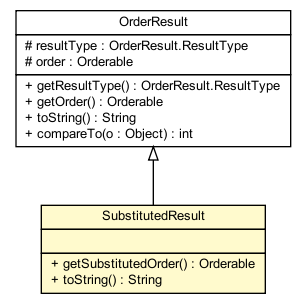

dip.order.result
Class SubstitutedResult

java.lang.Object
 dip.order.result.Result
dip.order.result.OrderResult
dip.order.result.SubstitutedResult
dip.order.result.Result
dip.order.result.OrderResult
dip.order.result.SubstitutedResult
- All Implemented Interfaces:
- java.io.Serializable, java.lang.Comparable
public class SubstitutedResult
- extends OrderResult
If an adjudicator replaces an order (because it is invalid, for
example) or creates an order (because no order was given), a
SubstitutedResult is created.
getOrder() may return null
if an order was added, and no previous order existed. However,
getPower() will not; the power is set from the
new order.
- See Also:
- Serialized Form
|
Method Summary |
Orderable |
getSubstitutedOrder()
Returns the substituted (new) order that replaces the
old order (or no order, if an order was created). |
java.lang.String |
toString()
This is intended for debugging only. |
| Methods inherited from class java.lang.Object |
clone, equals, finalize, getClass, hashCode, notify, notifyAll, wait, wait, wait |
SubstitutedResult
public SubstitutedResult(Orderable oldOrder,
Orderable newOrder,
java.lang.String message)
- Create a SubstitutedResult. Note that oldOrder may be null, but
newOrder is not allowed to be null.
getSubstitutedOrder
public Orderable getSubstitutedOrder()
- Returns the substituted (new) order that replaces the
old order (or no order, if an order was created).
toString
public java.lang.String toString()
- This is intended for debugging only.
- Overrides:
toString in class OrderResult